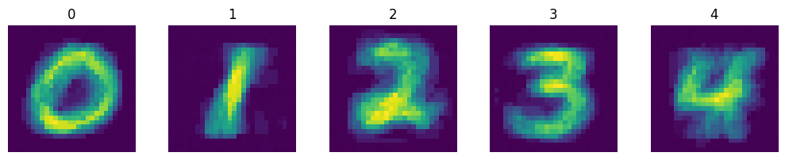

MNIST Example#
[1]:
# You dont need this, this is for my convinience
import sys
import os
notebook_dir = '\\'.join(os.getcwd().split('\\')[:-1])
sys.path.append(notebook_dir)
[ ]:
import numpy as np
import matplotlib.pyplot as plt
from nervos.utils import Module, Parameters
from nervos.dataloader import MNISTLoader
[10]:
p = Parameters()
p.from_url('https://pastebin.com/raw/X9fAjKGR')
[11]:
class MNIST_SNN(Module):
def __init__(self, parameters, identifier=None):
super().__init__(parameters, identifier)
self.dataloader = MNISTLoader(parameters, classes=[i for i in range(5)])
self.X_train, self.Y_train = self.dataloader.dataloader(
preprocess=True, pca=False, size=100
)
self.X_test, self.Y_test = self.dataloader.dataloader(
preprocess=True, train=False, pca=False
)
def predict(self, un_processed_image, model_location):
spike_train = np.array(self.dataloader.img2spiketrain(un_processed_image))
synapses, neuron_label_map = self.load_model(model_location)
return self.get_prediction(spike_train, synapses, neuron_label_map)
[12]:
m = MNIST_SNN(p,"5classmnist")
m.initialise_layers([784,80])
y = m.train()
Epoch 1/3
100/100 [========================================]
Testing...
Test set accuracy: 0.7
Time elapsed since training start: 62.966s
Epoch 2/3
100/100 [========================================]
Testing...
Test set accuracy: 0.95
Time elapsed since training start: 127.356s
Epoch 3/3
100/100 [========================================]
Testing...
Test set accuracy: 1.0
Time elapsed since training start: 190.878s
Training complete!
[13]:
def visualise_synapse(synapses,labels):
kk=28
classes = {i:np.zeros((kk,kk)) for i in np.unique(labels)}
for idx in range(len(synapses)):
classes[labels[idx]]+= synapses[idx].reshape((kk,kk))
i = 1
plt.figure(figsize=(10,30))
for k in classes.keys():
plt.subplot(1,len(classes),i)
plt.imshow(classes[k])
plt.title(f"{k}")
plt.tight_layout()
plt.axis('off')
i+=1
plt.show()
visualise_synapse(m.learned_synapses[0],m.learned_neuron_label_map)

[14]:
def accuracy(m2):
spike_trains,labels = MNISTLoader(p,classes=[i for i in range(5)]).dataloader(train=False,preprocess=True,seed=123,size=1500)
t = 0
c = 0
preds = []
print('Calculating Accuracy')
for st,label in zip(spike_trains,labels):
pred = m2.get_prediction(st)
preds.append(pred)
if pred == label:
c+=1
t+=1
print(f"\rTested {t} images",end='')
print()
print(c/t)
return labels,preds
y_true,y_pred = accuracy(m)
Calculating Accuracy
Tested 1500 images
0.906